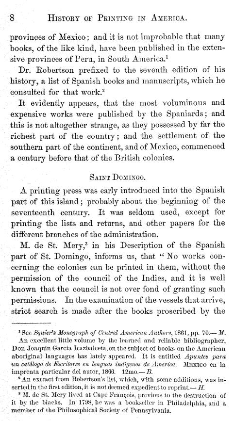

<pb n="8"/>
provinces of Mexico; and it is not improbable that many <lb/>
books, of the like kind, have been published in the exten- <lb/>
sive provinces of Peru, in South America.<ref target="n8.1"><sup>1</sup></ref>
<note id="n8.1" place="foot"><seg type="note-symbol"><sup>1</sup></seg><p>See <hi rend="italic">Squier's Monograph of Central American Authors</hi>, 1861, pp. 70.—<hi rend="italic">M</hi>.</p>
<p>An excellent little volume by the learned and reliable bibliographer, <lb/>
Don Joaquin Garcia Icazbalceta, on the subject of books on the American <lb/>
aboriginal languages has lately appeared. It is entitled <hi rend="italic">Apuntes para <lb/>
un cataloga de Escritores en lenguas indmgenos de America</hi>. <smcap>Mexico</smcap> en la <lb/>
imprenta particular del autor, 1866. 12mo.—<hi rend="italic">B</hi>.</p></note>
</p>
<p>Dr. Robertson prefixed to the seventh edition of his <lb/>
history, a list of Spanish books and manuscripts, which he <lb/>
consulted for that work.<ref target="n8.2"><sup>2</sup></ref>
<note id="n8.2" place="foot"><seg type="note-symbol"><sup>2</sup></seg><p>An extract from Robertson's list, which, with some additions, was in- <lb/>
serted in the first edition, it is not deemed expedient to reprint.—<hi rend="italic">H</hi>.</p></note>
</p>
<p>It evidently appears, that the most voluminous and <lb/>
expensive works were published by the Spaniards; and <lb/>
this is not altogether strange, as they possessed by far the <lb/>
richest part of the country; and the settlement of the <lb/>
southern part of the continent, and of Mexico, commenced <lb/>
a century before that of the British colonies.</p>
</div3>
<div3 type="section">
<head><smcap>Saint Domingo</smcap>.</head>
<p>A printing press was early introduced into the Spanish <lb/>
part of this island; probably about the beginning of the <lb/>
seventeenth century. It was seldom used, except for <lb/>
printing the lists and returns, and other papers for the <lb/>
different branches of the administration.</p>
<p>M. de St. Mery,<ref target="n8.3"><sup>3</sup></ref>
<note id="n8.3" place="foot"><seg type="note-symbol"><sup>3</sup></seg><p>M. de St. Mery lived at Cape François, previous to the destruction of <lb/>
it by the blacks. In 1798, he was a bookseller in Philadelphia, and a <lb/>
member of the Philosophical Society of Pennsylvania.</p></note>
in his Description of the Spanish <lb/>
part of St. Domingo, informs us, that "No works con- <lb/>
cerning the colonies can be printed in them, without the <lb/>
permission of the council of the Indies, and it is well <lb/>
known that the council is not over fond of granting such <lb/>
permissions. In the examination of the vessels that arrive, <lb/>
strict search is made after the books proscribed by the <lb/>